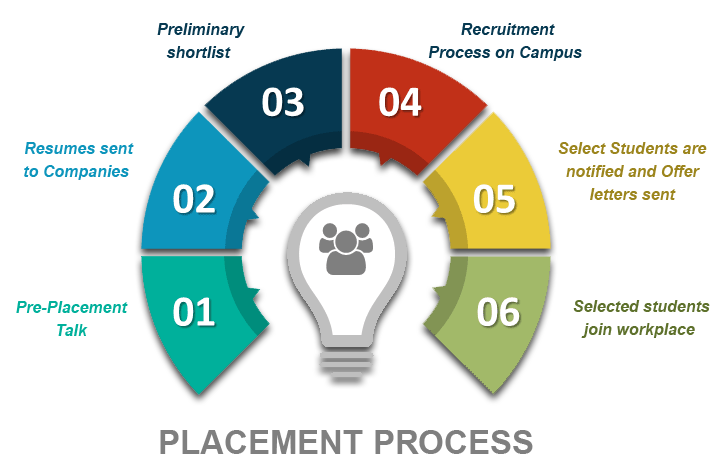

Placement And Training

Quient training is an enthusiastic group intended to train students in colleges that are denied the privilege of Placement training, A group of Enthusiasts now have a vision of training students that don’t have access to placement training that can help them get placed, and thereby build their future.
Why is Placement training important:
Placement training plays a major role in shaping up the career goals of students. It is
the dream of every engineering student to get placed in a top organization visiting
their campus for recruitment. Keeping this key aspect into consideration, it is realized
that training is important for engineering students to enhance their employability skills
and achieve good placement in various Industries
At present, the competition for employment is increasing every day and placement has
become a challenging task. Training students and equipping them with life skills has
become an important responsibility of the institution. Along with technical expertise,
the development of a holistic personality is also necessary.
Objectives and Training Activities by QG(Quient Group):
The prime objective of the Training Cell is
- To look for 100% employment for all students.
- To recognize the core competencies of the students.
- To train the students to meet the expectations of the industry through our Career Development Programmes.
- To build confidence in students and develop the right attitude in them and
- enhance their communication skills.
Training Activities :
- Create awareness about “career planning" and "career mapping" among the students.
- Equip the student with life skills.
- Train the students on “Personality development".
- Organize Various Training Programmes to train the students in the areas of Quantitative Aptitude, Logical Reasoning and Verbal reasoning through the reputed external training organizations and in-house trainers.
- Train the students through Mock Interviews to perform well in the professional interviews as per the expectations of the corporate world.
- Train the students on group discussion techniques
- Conduct online tests and written aptitude tests.
About Company
Bionic’s proprietary Growth OS solution enables Accenture Interactive clients to innovate like start-ups
NEW YORK, June 29, 2021 – Accenture (NYSE: ACN) announced it has acquired Bionic to help clients ignite
customer growth through an entrepreneurial approach designed for large organizations, enabling them to
launch new products and businesses that fulfil unmet customer needs. The acquisition strengthens Accenture
Interactive’s ability to help its clients drive growth by reimagining experiences and seizing new market
and customer opportunities with less risk and more confidence.
Based in New York and founded in 2013, Bionic leverages its proven growth model, tools (GrowthOS™),
and entrepreneurial mindsets to institutionalize growth across Fortune 1000 companies. Bionic is
comprised of 40 entrepreneurs, growth investors, and designers who have helped leading businesses
including P&G (Growth Works), Exelon and AB InBev’s ZX Ventures, among many others.
“We believe venture capital and entrepreneurship are forms of management and strategy that are
incredibly relevant, but remain elusive, to big businesses as they seek growth and relevance
post-pandemic,” said Baiju Shah, chief strategy officer, Accenture Interactive. “The ability
to deeply understand and rapidly adapt to ever-changing customer needs is the battleground for
brands today. In fact, eighty percent of CEOs acknowledge the need to reimagine their experiences
to stay relevant to their customers. Bionic and Accenture Interactive will bring a new
experience-led approach to customer growth, including a playbook for brands to build the
organizational and operational muscles to innovate at pace.”
Bionic will join Accenture Interactive’s Growth and Business Design practice, which was established
to meet client demand for a new approach to growth. The multidisciplined practice brings together designers,
strategists, technologists, entrepreneurs, venture investors, change makers and innovators to help clients
unlock new revenue streams and enable organizations to innovate at scale. Bionic’s proprietary GrowthOS™
will enhance Accenture Interactive’s existing capabilities to catapult growth for clients with a proven,
customizable, scalable and repeatable solution.